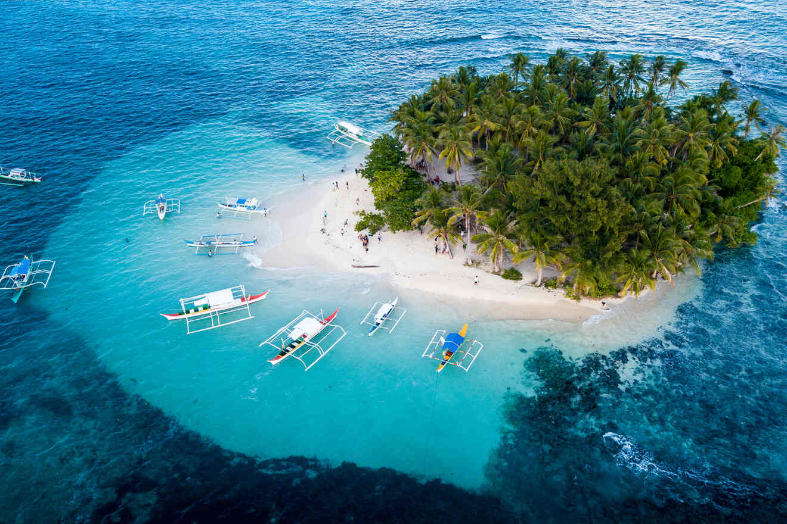
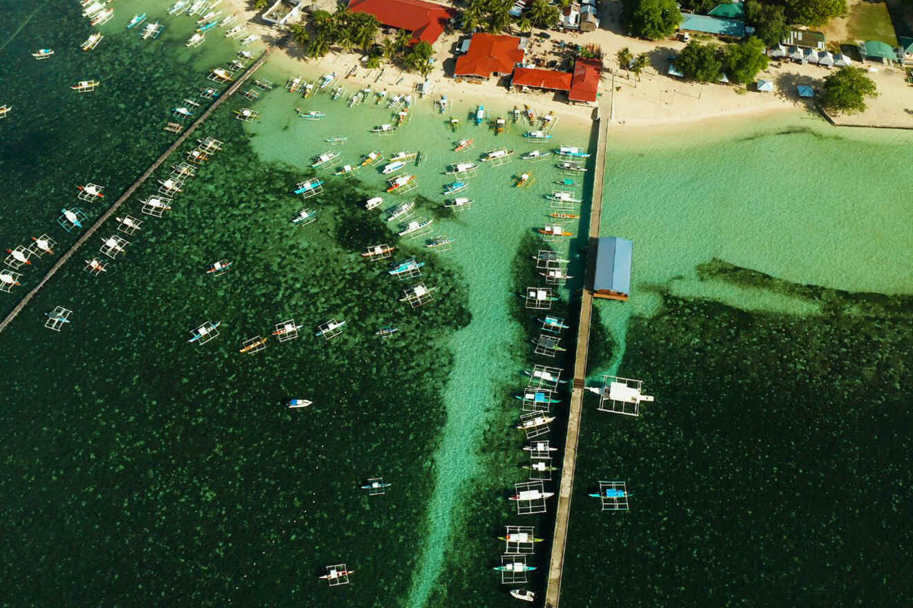
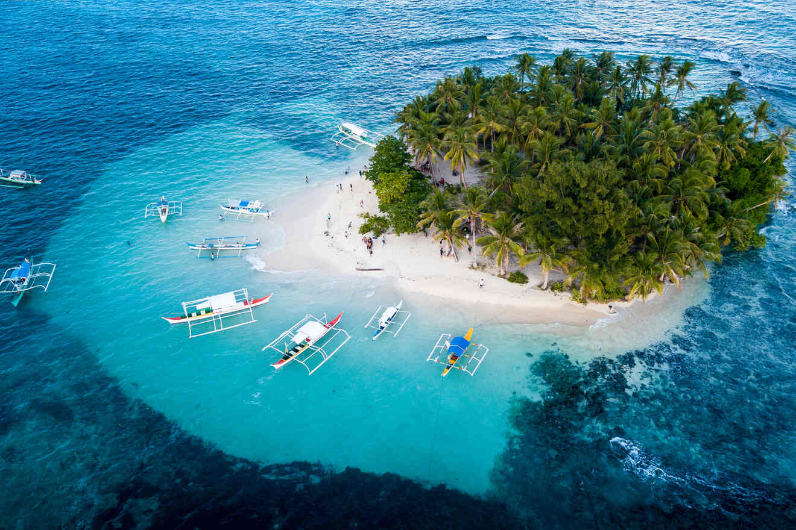
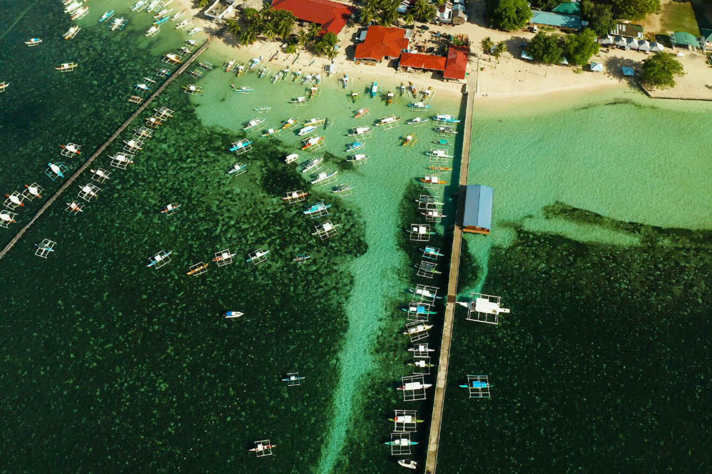

Siargao
Siargao is known as the "Surfing Capital of the Philippines." The island offers stunning beaches, natural lagoons, and perfect waves for surfing enthusiasts. It’s a paradise for both surfers and nature lovers.
 Siargao is known as the "Surfing Capital of the Philippines." The island offers stunning beaches, natural lagoons, and perfect waves for surfing enthusiasts. It’s a paradise for both surfers and nature lovers.
 